Su bingo completo desde el teléfono o la computadora: venda cartones con comprobante de pago,
reparta bloques de series entre sus vendedores, imprima los cartones en PDF y cante el juego
con verificación de ganadores, rifa de desempate y una pantalla para proyectar las bolas.
₡65 000 por bingo
Hasta 10 000 cartones distintos
6 tipos de enlace, uno por persona
0 registros e instalaciones
Juego en línea y presencial
Precios por combos
Rifa de desempate y pantalla para proyectar
Versión Beta. Todas las capturas se tomaron sobre la app real con datos de demostración:
nombres, correos, teléfonos y enlaces son ficticios.
Organizador
#b/<enlace>
La llave de su bingo: Resumen, Ventas, Cartones, Sectores, Juego y Ajustes. No requiere cuenta ni contraseña; no lo comparta.
Cantador
#bk/<enlace>
Solo el juego: sacar bolas, verificar cartones, rifar y registrar ganadores. Para quien canta, sin acceso a ventas ni ajustes.
Pantalla
⧉ Abrir pantalla
Se abre desde el juego, en otra ventana del mismo equipo, para proyectar las bolas cantadas y la rifa en un televisor o proyector.
Encargados de sector
#bv/<enlace>
Uno por vendedor: registra ventas con comprador, correo y comprobante, y ve cuánto lleva vendido.
Compra en línea
#bc/<enlace>
Para el público: elige cuántos cartones quiere, paga por SINPE Móvil y sube su comprobante.
Jugadores
#bj/<enlace>
Todos los cartones de una persona en un solo enlace, con la bola en vivo. Cada correo es un jugador.
01 · Cómo obtenerlo
Su bingo en cuatro pasos
Usted no tiene que instalar nada ni crear una cuenta.
Escríbame por WhatsApp al +506 6200 5921 con el nombre, la fecha y el tamaño de su evento. Cada bingo (con todos sus enlaces y hasta 10 000 cartones) cuesta ₡65 000.
Creo su bingo. Cada bingo tiene su propia carpeta en Google Drive (con su hoja de ventas y los comprobantes), que puedo compartir con su correo de Google.
Le envío su enlace de organizador. Ábralo en su teléfono o computadora y guárdelo bien.
Usted lo configura en Ajustes: fecha y hora, lugar, SINPE, combos de precios y la forma de jugar. Con eso ya puede compartir el enlace de compra.
Cada bingo nuevo genera cartones completamente distintos a los de cualquier bingo anterior, aunque se usen las mismas series. Por eso, para un evento nuevo se crea un bingo nuevo: los cartones impresos de otro evento no pasan la verificación.
02 · Ajustes
Datos, precios y la forma de jugar
La primera vez, la app le lleva a Ajustes. Todo se puede corregir después sin perder las ventas.
Datos del bingo y pagos
Nombre, fecha, hora y lugar. La fecha se muestra en todos los enlaces como «15 de nov de 2026 a las 19:00».
Modalidad: presencial, virtual o mixta, y el WhatsApp del organizador.
SINPE Móvil, a nombre de quién y, si quiere, un IBAN para transferencias.
Precios por combos
Cada combo es una cantidad de cartones con su precio. La app arma sola el total de cualquier cantidad con la combinación más barata para el comprador, así que no hay límite de cartones por compra.
Ejemplo: con 1 cartón = ₡3 000 y 10 cartones = ₡19 000, 21 cartones = 2 combos de 10 + 1 cartón = ₡41 000.
El combo de 1 cartón es obligatorio: con él se arma cualquier cantidad.
Si comprar un cartón adicional cuesta lo mismo o menos que la cantidad anterior, la app avisa que los precios no están escalonados y le pide confirmar.
La calculadora y la «tabla automática» muestran el total de cada cantidad y cómo se arma.
Juego y BINGO
Opción
Qué ve el jugador
Qué ve el cantador
BINGO manual (por defecto)
Marca cada número tocando la casilla.
Solo «¡Ya hay alguien con este premio!», sin decir qué cartón. Verifica cada cartón que cante BINGO.
BINGO automático
Los números cantados se marcan solos; puede cambiar a marcar tocando.
Los cartones ganadores de inmediato, listos para rifar si son varios.
Bolas: «Bolas de la app» (el cantador solo toca «Sacar bola» y no puede escribir números) o «Tómbola física» (solo se escribe el número que salió).
Dígitos de la serie: 3, 4 o 5 (001, 0001 o 00001), según el tamaño de su bingo.
Mensajes
WhatsApp: con negrita, emojis y una vista previa como un chat real.
Correo: editor visual con vista previa de bandeja de entrada. Sale con el nombre de su bingo; los emojis se quitan al guardar, porque muchos lectores de correo los muestran como cuadros.
Ambos aceptan datos que se completan solos: nombre, bingo, fecha, lugar, cantidad, monto, series y el enlace de cartones.
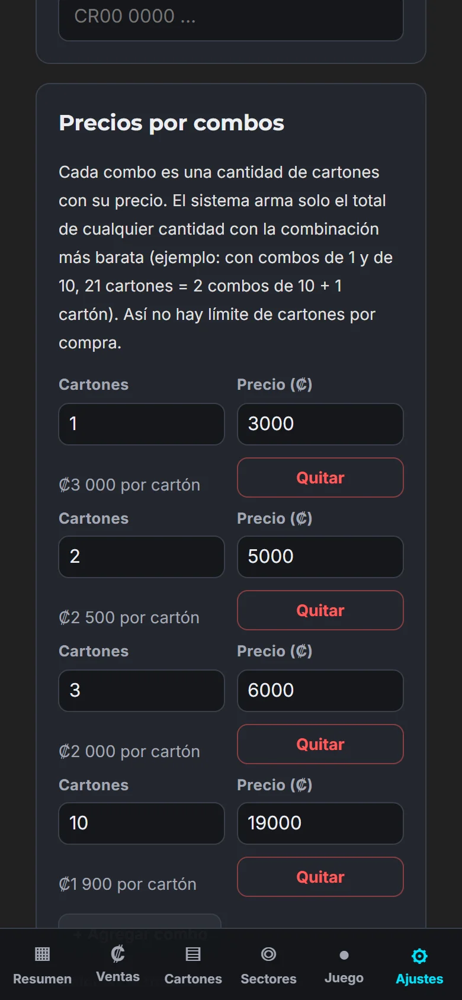
Combos — el precio por cartón de cada uno.
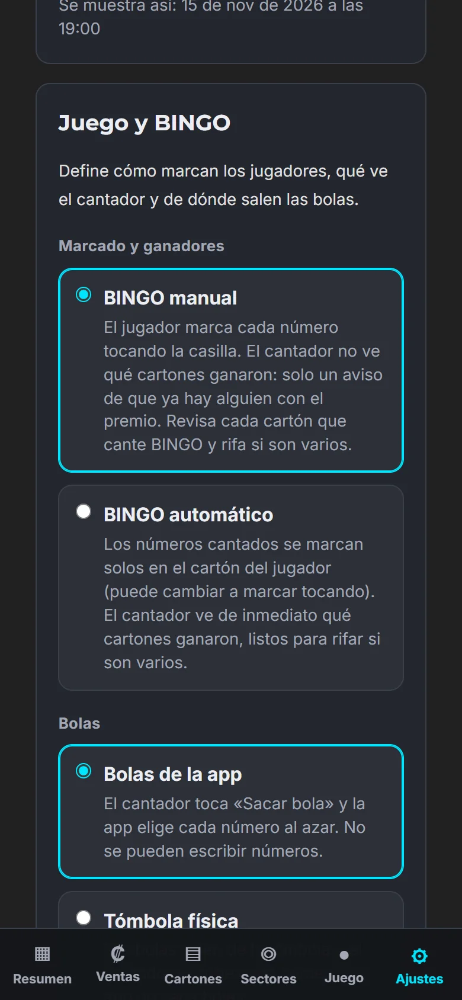
Juego y BINGO — marcado, bolas y dígitos.
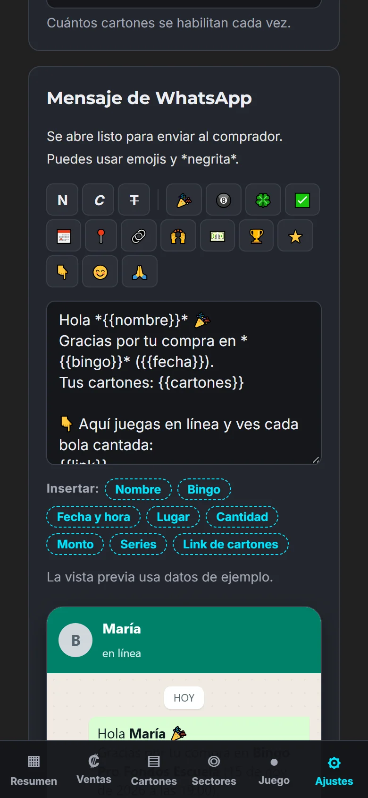
Mensaje de WhatsApp — con vista previa de chat.
03 · Cartones
Diseño, centro y PDF para imprimir
Cada serie es un cartón único y siempre el mismo: en el PDF, en el enlace del jugador y en la verificación del cantador.
Lote: se habilitan cartones por bloques (100 a la vez, hasta 10 000). Las compras en línea amplían el lote solas cuando se acaban los libres.
Diseño: descargue el template, diseñe su arte en Canva o Photoshop dejando libre el espacio de las casillas, y súbalo en 1200 × 1680 px (10 × 14 cm). También acepta PNG transparente o PDF.
Centro del cartón: espacio libre o un número. Con espacio libre puede poner una imagen PNG de exactamente 190 × 190 px, como su logotipo.
PDF por rango: elija desde qué serie hasta cuál y descargue los cartones listos para imprimir.
QR y código: cada cartón trae un código de verificación. Quien escanea el QR ve ese cartón en vivo, y nadie puede inventar una serie.
Buscar un cartón por serie para revisarlo en pantalla.
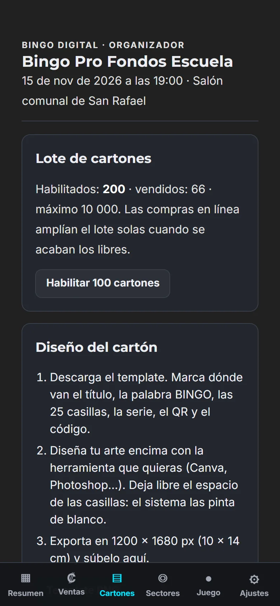
Cartones — lote y diseño en tres pasos.
04 · Ventas
Del comprobante al enlace de cartones
Las compras en línea llegan con comprobante; las presenciales se anotan en el momento.
Compra en línea
El comprador abre el enlace de compra, escribe su nombre, WhatsApp y correo, y elige cómo va a jugar (en línea o impreso) y quién le vendió.
Elige la cantidad: el total sale con el desglose de combos.
Paga por SINPE Móvil y sube la foto o el PDF del comprobante.
Usted la ve en Pendientes: «Ver comprobante», «Aprobar», «Aprobar con series» (para asignar cartones impresos) o «Rechazar» con un motivo.
Ya aprobada pasa a Por enviar: un toque abre WhatsApp con el mensaje listo, o envía el correo con el enlace de sus cartones.
Venta presencial
«+ Venta presencial» anota al comprador con sus series impresas o con cartones asignados por la app, la forma de pago y el comprobante (obligatorio con SINPE y transferencia).
Un jugador, un enlace
El correo identifica a cada jugador: si una persona compra varias veces con el mismo correo, todos sus cartones aparecen en el mismo enlace. En Ventas, la tarjeta lo indica con «Mismo jugador».
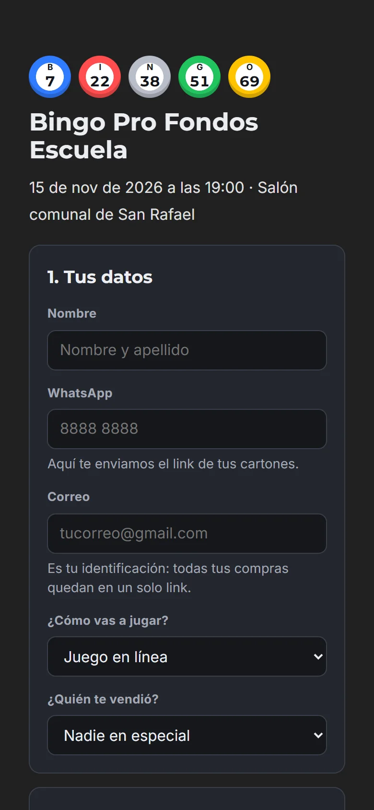
Compra en línea — el correo une todas sus compras.
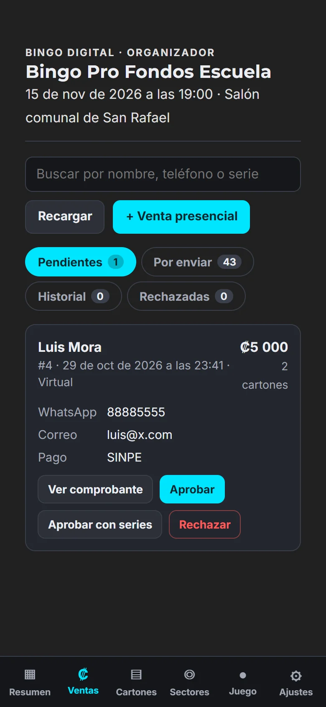
Ventas — aprobar con el comprobante a la vista.
05 · Sectores
Vendedores con su propio enlace
Para bingos de comunidad, escuela o iglesia, donde varias personas venden cartones impresos.
Cada sector recibe un bloque de series (por ejemplo del 1 al 50) para imprimir y vender en persona. Los bloques no se cruzan y las compras en línea usan las series fuera de ellos.
Cada sector tiene varios encargados, cada uno con su enlace. Desde ahí registra la venta completa: comprador, correo, WhatsApp, series, forma de pago y comprobante.
El encargado ve cuántos cartones vendió, su monto y el total del sector. Puede enviar el enlace de cartones por WhatsApp e imprimir su bloque.
Apagar un sector desactiva todos sus enlaces.
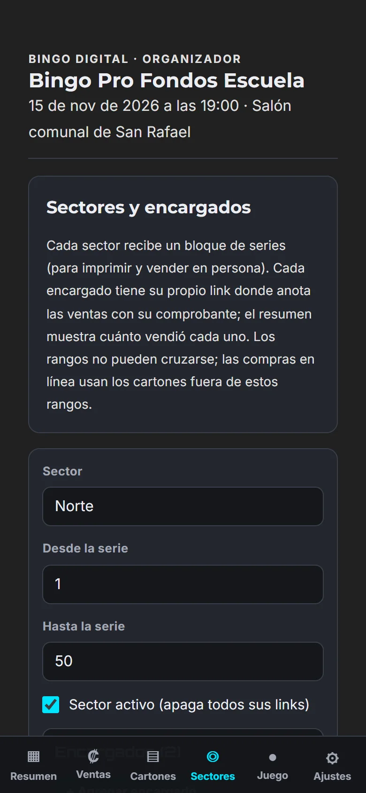
Sectores — bloque de series y encargados.
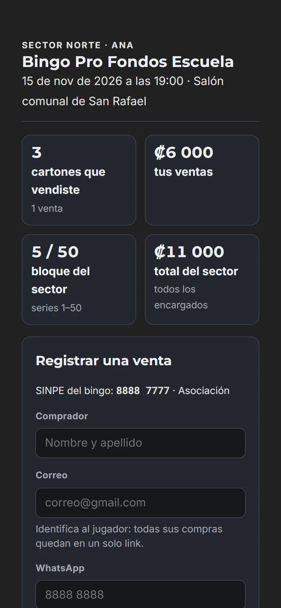
Enlace de la encargada — sus ventas y el formulario.
06 · Resumen
Cómo va su bingo, de un vistazo
Cartones vendidos, dinero recaudado, compradores (cada correo cuenta como uno), compras por aprobar y por enviar.
Tablero por sector y por encargado: cartones, monto y ventas de cada uno, con una barra de avance del bloque.
Los enlaces para compartir: compra (con botón de WhatsApp), cantador y vendedores.
«↻ Actualizar» trae las ventas nuevas sin salir de la página, con la hora de los datos.
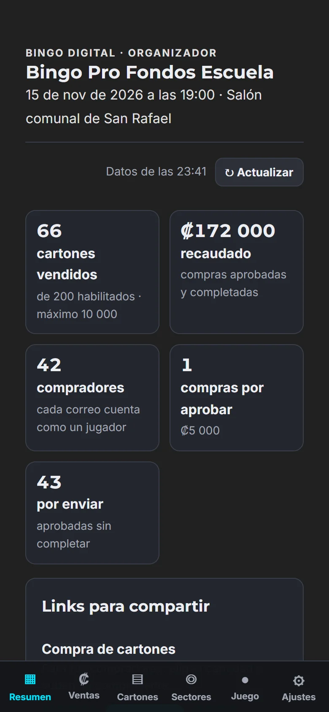
Resumen — las cifras del bingo y el botón «Actualizar».
07 · El juego
Rondas, cantador y ganadores
El organizador y el cantador ven el mismo juego. Las rondas se preparan antes y se juegan una por una.
Tipos de ronda
Ronda
Cómo se gana
Figuras y premios
Varios premios con las mismas bolas, cada uno con su figura: línea, vertical de cada letra, horizontal de cada fila, diagonales, 4 esquinas, X, L, T, marco, cartón lleno o una figura personalizada.
El cartón más salado
Gana el cartón vendido con la mayor cantidad de espacios en blanco (números que no han salido). Usted decide cuándo parar.
Eliminación
Cada bola elimina los cartones que la tienen. Gana el último cartón en pie; la app cuenta los que quedan.
Cantar
La bola grande, las anteriores y el tablero de las 75 bolas con las que ya salieron.
Con bolas de la app, «Sacar bola» elige al azar; con tómbola, se escribe el número que salió y la app avisa si ya había salido.
«Deshacer la última» corrige una bola mal cantada.
Verificar un cartón
Escriba la serie del cartón que cantó BINGO. La app lo muestra con sus marcas, dice si cumple cada premio y con qué bola lo completó: «la última cantada» o «hace 4 bolas». Así sabe si cantó a tiempo. También indica a quién se vendió ese cartón.
Ganadores ocultos o a la vista
Con BINGO manual, abajo solo aparece «¡Ya hay alguien con este premio!», sin decir qué cartón, para no arruinar la emoción de los jugadores.
Con BINGO automático, abajo aparecen de inmediato los cartones que ya tienen BINGO.
Rifa de desempate
Cada cartón verificado se agrega con «Cantó BINGO: a la rifa». Con BINGO automático, los ganadores entran solos.
Con dos o más, «Rifar entre N cartones» elige uno al azar. El resultado no se puede repetir.
«Registrar la serie» lo guarda como ganador, con la nota de entre quiénes se rifó.
También sirve para empates en «el cartón más salado» y en la eliminación.
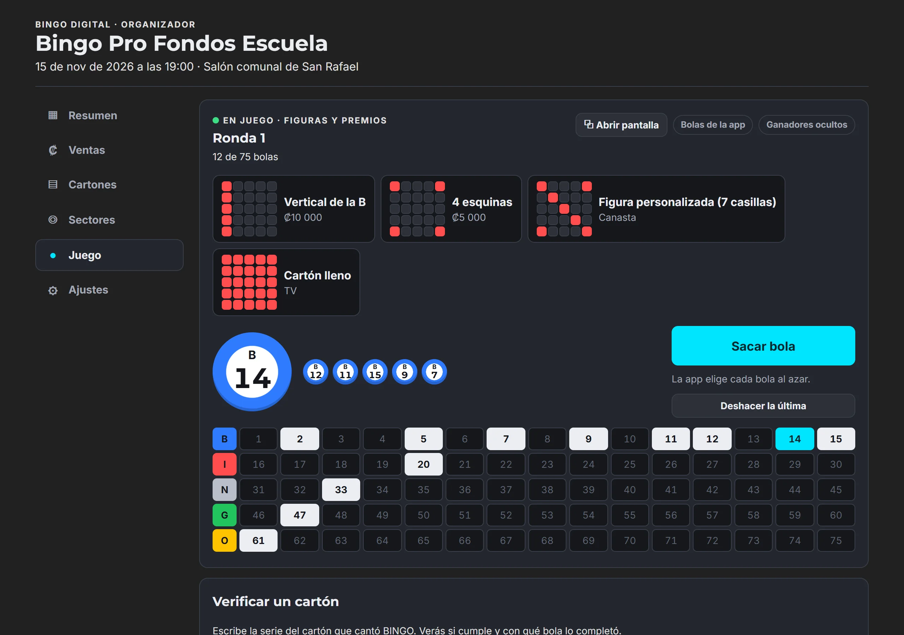
Cantador — premios, última bola y tablero.
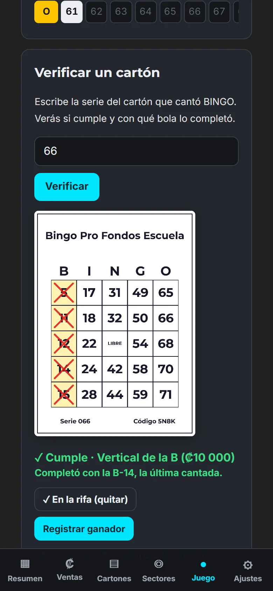
Verificar — si cumple y con qué bola.
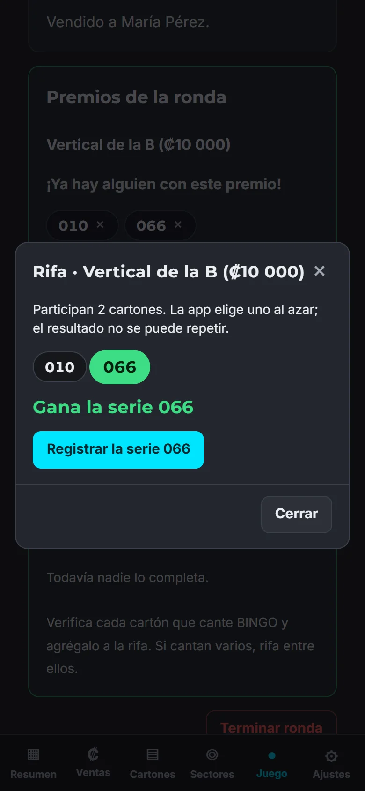
Rifa — gana una serie y se registra.
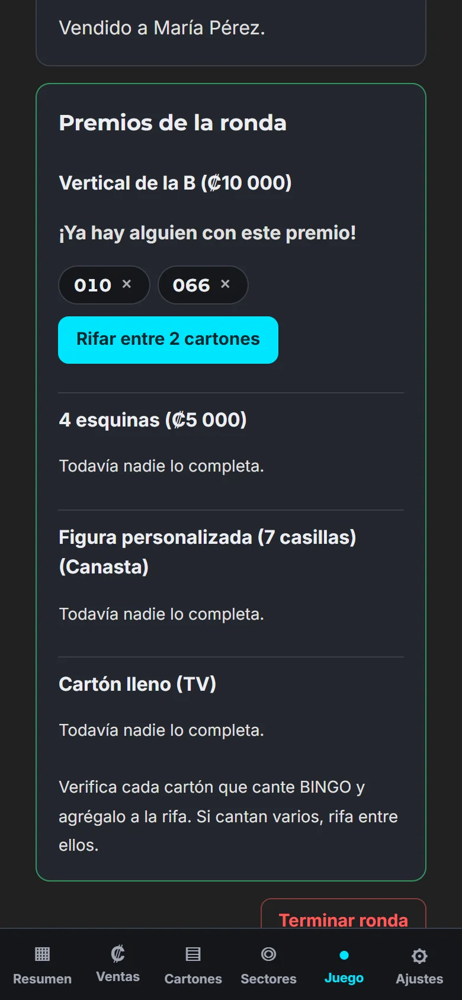
BINGO manual — el aviso no dice qué cartón ganó.
08 · Pantalla
Las bolas en el televisor o el proyector
«⧉ Abrir pantalla» abre otra ventana con un diseño solo para proyectar.
Muestra el nombre del bingo, la ronda, la bola grande, las anteriores y el tablero de las 75 bolas.
Al rifar, salta a la rifa: las series participantes se iluminan una tras otra y termina con la serie ganadora en grande, al mismo tiempo que en la pantalla del cantador.
Con la siguiente bola vuelve sola al tablero. Tiene botón de pantalla completa.
Ábrala en el mismo navegador y equipo del cantador. Si el navegador bloquea la ventana, permita las ventanas emergentes del sitio.
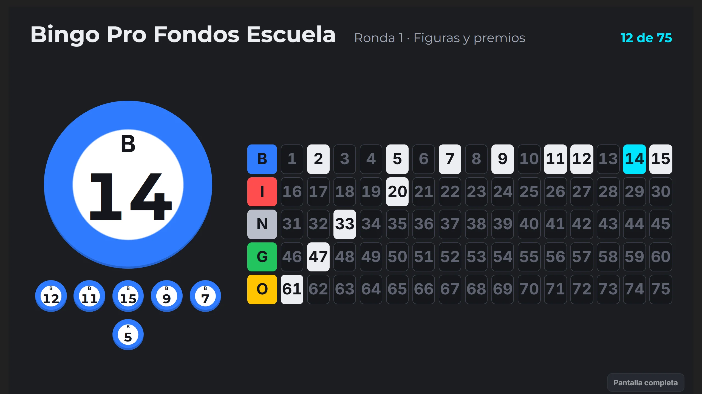
Pantalla — lo que ve el público.
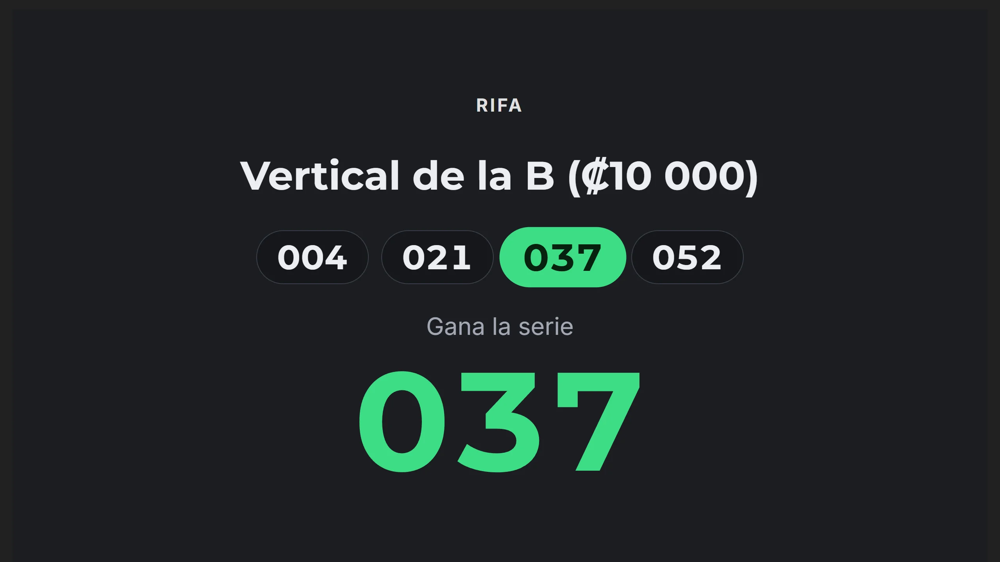
Rifa en la pantalla — la serie ganadora en grande.
09 · Jugadores
Jugar en línea desde el teléfono
Cada jugador recibe un enlace con todos sus cartones, de todas sus compras con el mismo correo.
Arriba ve la ronda en juego, sus premios, la última bola y las anteriores, actualizadas cada pocos segundos.
Marca cada número tocando la casilla (con una X roja), o se marcan solos si el bingo tiene BINGO automático.
Puede descargar la imagen de cada cartón para guardarla o imprimirla.
Jugador — la bola en vivo sobre sus cartones.
10 · Preguntas
Preguntas frecuentes
¿Cuánto cuesta?
₡65 000 por bingo: todos sus enlaces, hasta 10 000 cartones y todas las funciones. Pídalo por WhatsApp al +506 6200 5921; es una versión Beta y lo acompaño en la configuración.
¿Los cartones se repiten entre bingos?
No. Cada bingo nuevo genera cartones distintos a los de cualquier otro, aunque tengan la misma serie.
¿Puede haber dos cartones iguales en mi bingo?
No. Dentro de un bingo, cada serie es un cartón único.
¿Cuántos cartones puede tener?
Hasta 10 000. Se habilitan por lotes y las compras en línea los amplían solas.
¿Se puede jugar con cartones impresos?
Sí. Imprima el PDF por rango o deje que cada sector imprima su bloque, y verifique en el juego con la serie.
¿Qué pasa si alguien compra dos veces?
Si usa el mismo correo, todos sus cartones aparecen en un solo enlace.
¿Y si cantan BINGO varias personas a la vez?
Verifique cada cartón, agréguelo a la rifa y rife entre ellos. La pantalla muestra la rifa al público.
¿Puedo usar mi propia tómbola?
Sí. En Ajustes elija «Tómbola física»: el cantador escribe el número que salió y la app no saca bolas.
¿Tengo otra duda?
Escríbame por WhatsApp al +506 6200 5921 y le respondo personalmente.
11 · Su bingo
¿Quiere organizar un bingo?
Todas las capturas se tomaron sobre la app real con datos de demostración: nombres, correos,
teléfonos y enlaces son ficticios. Cada cambio de la herramienta queda registrado en
Parches y Noticias.